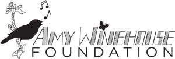

Reach them earlier.
Helping young people make informed choices about drugs and alcohol.

Donate nowAn evening in Amy’s memory.
An evening of music and memory.
Help change the lives of young people.
Give directly to the Amy Winehouse Foundation.
Behind every number,
there is someone worth fighting for.
People in the UK are estimated to be living with alcohol and/or illegal-drug addiction.
A 2026 report estimates around 1.1 million people. Crest Advisory & The Forward Trust ↗
The event vision
A celebration of Amy’s music and memory, with the future of young people at its heart.
Mitch WinehouseThe work behind the legacy
The Foundation helps young people build resilience and make informed choices, and supports young women recovering from addiction. Explore the Foundation’s work ↗
Helping young people make informed choices about drugs and alcohol.
Amy’s Place offers young women a safe place to recover from addiction.
Music therapy for children with life-limiting illnesses.
It’s your support that makes a difference.
Help us to reach more young people today.
Fundraise for the Foundation
and become part of the work.
Keep up to date with the Amy Winehouse Foundation.
Sign up for emails